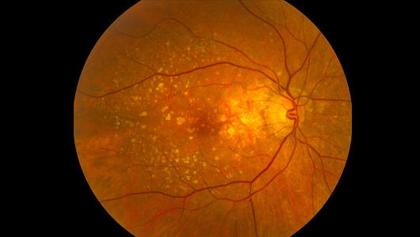

Naukowcy ocenili wpływ ekranów komputerów i urządzeń mobilnych na wyniki laserowej korekcji wzroku. Krótkowzroczność, nadwzroczność i astygmatyzm znikają niemal całkowicie po operacji. Jednak im więcej pacjentów korzysta z wyświetlaczy, tym mniejsze są efekty interwencji laserowej. Już po dwóch latach wiele z tych osób musi nosić okulary lub soczewki kontaktowe.
W badaniu wzięło udział ponad 6000 osób, które przeszły zabieg laserowej korekcji wzroku. Wszyscy spędzali ponad osiem godzin dziennie przed ekranem komputerów lub telewizorów. Eksperci przyjrzeli się ich diagnozom, wyniki były nieco rozczarowujące.
Opinia Specjalisty Grzegorza Sztebelskiego
„Przed operacją wszyscy uczestnicy cierpieli na łagodne do umiarkowanych zaburzeń widzenia: krótkowzroczność, dalekowzroczność, astygmatyzm, problemy z ostrością i wiele innych. Niemal natychmiast po operacji zobaczyli zdecydowaną poprawę. 80% z nich przestało nosić okulary lub soczewki. Niestety, pomimo operacji, jeśli pacjenci spędzali wiele godzin przed wyświetlaczem, np. pracując przy komputerze, efekty operacji ustąpiły po około roku lub dwóch latach. Ponadto niektórzy pacjenci nie zauważyli poprawy po operacji”.
OTO KILKA TYPOWYCH PRZYPADKÓW.
Tak widziała jedna z uczestniczek: 40-letnia kobieta, księgowa. Spędza przed komputerem siedem do jedenastu godzin dziennie. Przed operacją nosiła soczewki kontaktowe.
W zeszłym roku przyjechała do naszej kliniki, aby leczyć krótkowzroczność, za pomocą operacji laserowej. Niestety po dwóch latach znów potrzebowała soczewek kontaktowych.
Oto zdjęcie siatkówki innego pacjenta, 25-letniego programisty, który przyjechał leczyć astygmatyzm operacją laserową.
W umiarkowanym stopniu widać poprawę. Pacjent mógł pozbyć się okularów.

Rok później wrócił do naszej kliniki, aby przejść kolejną operację. Jego wzrok pogorszył się przez wielogodzinną pracę przy komputerze.

W większości przypadków leczenie miało podobny schemat jak ten, który został przedstawiony na zdjęciach. Praca przed komputerem stopniowo zmniejsza i ostatecznie niweczy wszystkie wyniki uzyskane przy chirurgii laserowej. Kiedy chory siedzi nieruchomo i patrzy na ekran przez wiele godzin, mięsień rzęskowy kontrolujący soczewkę jest obciążony. Ten mięsień jest odpowiedzialny za prawidłową akomodację - zdolność oka do wyraźnego widzenia z każdej odległości. Z biegiem czasu akomodacja zmniejsza się, powodując pogorszenie widzenia.
Wielogodzinne siedzenie przy komputerze zmniejsza również ukrwienie siatkówki i soczewki. Wynikiem tego jest pogłębienie astygmatyzmu i krótkowzroczności. Z biegiem lat wzrasta ryzyko zaćmy, jaskry i innych groźnych chorób.
Gdyby nasi pacjenci przestali korzystać z monitorów komputerów i ekranów telewizyjnych, efekty zabiegu laserowej korekcji byłby trwalsze. 78% uczestników badania wykonuje pracę umysłową. Dla nich rezygnacja z postępu cywilizacji byłaby znacznie poważniejsza niż zwykła zła wizja: brak pieniędzy, brak spełnienia osobistego i wiele więcej. We współczesnym społeczeństwie nie można żyć bez urządzeń cyfrowych. Dla cywilizacji medialnej byłaby to ogromna strata. Świat straciłby miliony naukowców, programistów, dziennikarzy, analityków finansowych i wielu innych.
Jak zachować prawidłowy wzrok, spędzając długie godziny przed komputerem?
Pierwszą rzeczą, którą trzeba sobie uzmysłowić, jest to, że operacja nie jest rozwiązaniem. Najważniejsze jest, aby zadbać o swój wzrok od wewnątrz. Jest to możliwe dzięki specjalnym środkom, które zawierają mikroelementy przywracające dobre widzenie.
JAKICH PRODUKTÓW UŻYWAĆ NA DOBRY WZROK?

Najważniejszymi substancjami umożliwiającymi utrzymanie zdrowia oczu są: luteina, zeaksantyna, witamina A i antocyjany. Wzmacniają mięsień rzęskowy, zwiększają dopływ krwi do gałki ocznej, łagodzą zmęczenie oczu po długotrwałym wysiłku oraz zmniejszają ryzyko zaćmy i jaskry o 68%. Elementy te są często używane do opracowywania produktów, które pomagają zachować zdrowie oczu. Niestety czasami producenci nie są w stanie dobrać odpowiedniej dawki.
Brak równowagi luteiny i zeaksantyny daje odwrotny efekt, zwłaszcza jeśli formuła produktu zawiera również witaminy. Trzeba również zadbać o prawidłowy dopływu krwi do oczu, ponieważ bez niego przeciążają się mięśnie oka, a siatkówka i soczewka słabną jeszcze szybciej.
Jako chemik mogę polecić doskonały produkt poprawiający widzenie o dobrze zbilansowanej formule - . Zawiera takie składniki jak niecierpek himalajski, aksamitkę błyszczącą, krwawnicę pospolitą oraz lipę drobnolistną. Dzięki najwyższemu stężeniu naturalnych substancji doskonale łagodzi zmęczenie oczu, poprawia ukrwienie, umożliwia prawidłowe zachowanie mięśni rzęskowych i normuje ciśnienie wewnątrz gałki ocznej.
„Aby poprawić widzenie w ciągu zaledwie jednego miesiąca, zależy codziennie zażywać jedną kapsułkę . Nasi pacjenci stwierdzają, że widzenie staje się wyraźniejsze po jednym lub dwóch tygodniach. Są w stanie ponownie odczytać drobny druk i rozróżnić drobne różnice między kolorami”.
Dzięki nawet 34062 pacjentom z problemami ze wzrokiem udało się zaprzestać noszenia okularów i soczewek kontaktowych, a ponad 2000 osób zdołało poprawić swój wzrok bez nich.
działa progresywnie. Czas trwania kuracji jest dobierany indywidualnie w zależności od początkowego stanu zdrowia oczu. Twój wzrok poprawi się o 87% po ukończeniu kuracji, nawet jeśli spędzasz więcej niż siedem lub osiem godzin dziennie przed komputerem, bądź relaksujesz się przed telewizorem po ciężkim dniu w pracy.
Przez wysokie marże narzucone przez koncerny farmaceutyczne nie prowadzimy sprzedaży w aptekach. Chcemy zapewnić Państwu gwarancję oryginalności, jakości i skuteczności produktu. Jedynie za pośrednictwem naszej strony można nabyć oryginalny produkt. Jest to oficjalna strona dystrybutora. Co więcej, dla jak najlepszej ceny udostępniamy formularz ze specjalną zniżką 55%
Od dawna psychicznie przygotowywałem się na to, że czeka mnie laserowa korekcja wzroku. Dzięki za artykuł. Fajnie, że mogłem tego uniknąć. Zaoszczędziłem dużo pieniędzy i nerwów, zamówione.
Na twoim miejscu nadal chodziłbym do lekarza. Kto wie, Twój problem może być poważny, możesz mieć nietolerancję na te składniki.
Wziąłem te kapsułki jakiś czas temu. Są bezpieczne to sam naturalny skład…. Bardzo skutecznie pomagają odzyskać dobry wzrok, po pracy na komputerze moje oczy nigdy nie są zmęczone widzę o wiele wyraźniej. A u lekarza byłem mówi ze jest zdecydowana poprawa. Pozdrawiam Jacek
Tak, te kapsułki są świetne! Teraz widzę lepiej.
Sytuacja brzmi mi znajomo. Jestem programistą. Wieczorem moje oczy bolą tak bardzo, że chcę je po prostu trzymać zamknięte przez 24 godziny. Zamawiam nie będę czekać aż będzie gorzej.
Bardzo szybko przysłali mi kapsułki! Usługa dostawy działa świetnie!
Dzięki wielkie! Zamówiłem je dla siebie i żony.
Mam nadzieję, że pomoże mi zregenerować oczy. Podczas nauczania zdalnego strasznie popsuł mi się wzrok :(
Nie mogę nosić soczewek bo strasznie pieką mnie oczy. Okulary nawet pogorszyły sytuację. Waszym zdaniem te kapsułki mi pomogą?
Weź je, serio pomagają. Trzymam kciuki :P
Bardzo polecam! Na ostatnim badaniu wzroku byłem w stanie również przeczytać dolne linijki, bez żadnego wysiłku.
Wejdź na stronę internetową
ZAMÓW